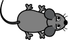

Katz und Maus
Mit Scratch kann man ohne viel Aufwand kleine Spiele erstellen. Wir werden jetzt zusammen ein Katz- und Mausspiel programmieren. Wenn du nicht alles auf Anhieb verstehst, mach dir keine Sorgen. In späteren Kapiteln wird alles noch einmal genau erklärt.
Beim Katz- und Mausspiel steuert der Spieler eine Katze. Die Katze muss in 20 Sekunden versuchen so viele Mäuse wie möglich zu fangen.
Erstelle auf scratch.mit.edu neues Projekt. Klicke unten rechts bei Bühne auf das Bühnenbild 1 und zeichne ein grosses grünes Rechteck, siehe Video 1. Die Bühne sieht nun aus wie ein Stück Rasen auf welchem dann die Katze die Mäuse fängt.
Video 1 – Grüner Hintergrund zeichen (Video: T. Jenni)
Die Katze
Füge eine Katzenfigur (Cat 2) hinzu, siehe Abb. 1. Setze die Grösse der Figur auf 50 %, siehe Video 1. Übernimm dann für die Katze den Code von Prog. 1.

Abb. 1 – Kostüm der Figur "Cat 2".
Wenn die grüne Flagge angeklickt
gehe zu x:(0) y:(0)
zeige dich
setze Stoppuhr zurück
wiederhole bis < (Stoppuhr) > (20) >
falls < (Entfernung von (Mauszeiger v)) > (5)>, dann
gehe (5) er Schritt
ende
drehe dich zu (Mauszeiger v)
ende
verstecke dich
stoppe [alles v]
Prog. 1 – Programm für die Katze
Wir lesen dieses Programm gemeinsam durch und versuchen es zu verstehen. Programme sind wie Kochrezepte. Sie werden von oben nach unten schrittweise ausgeführt.
Der erste Befehl Wenn grüne Flagge angeklickt wird wird nur dann ausgeführt, wenn man oberhalb der Bühne auf die grüne Flagge klickt.
Mit dem zweiten Befehl gehe zu x: 0 y: 0 wird die Katze in die Mitte der Bühne verschoben. Die Mitte der Bühne hat die Koordinaten (0,0). Anschliessend wird mit zeige dich, die Katze angezeigt.
Ein Spiel soll jeweils 20 Sekunden dauern. Mit dem Befehl setze Stoppuhr zurück wird die interne Stoppuhr auf null gesetzt. Die Stoppuhr zählt automatisch die Sekunden die verstreichen.
Jetzt kommt der Zangenbefehl wiederhole bis Stoppuhr > 20 . Das bedeutet, dass alle Befehle in der Zange wiederholt werden, bis die Stoppuhr mehr als 20 Sekunden anzeigt. D.h. das Spiel ist in seiner Dauer auf 20 Sekunden begrenzt.
In der Wiederholen-Zange gibt es einen weiteren Zangenbefehl falls Entfernung von Mauszeiger > 5 , dann. Die Befehle innerhalb von diesem Zangenbefehl werden nur dann ausgeführt, wenn die Katz weiter als 5 Schritte vom Mauszeiger entfernt ist. Falls dies der Fall ist, bewegt sich die Katze mit gehe 5 er Schritt vorwärts.
Zuletzt wird mit drehe dich zu Mauszeiger die Katze immer in Richtung des Mauszeigers ausgerichtet. Da sich alle diese Befehle in der wiederhole bis...-Zange befinden, werden sie immerzu wiederholt. D.h. die Katze wird sich immerzu auf den Mauszeiger ausrichten und wenn sie mehr als 5 Schritte entfernt ist, sich in dessen Richtung bewegen. Du kannst das Programm testen, indem du auf die grüne Flagge klickst.
Nach dem wiederhole bis ... -Befehl, räumen wir etwas auf. Zuerst wird die Katze mit verstecke dich ausgeblendet und dann das Programm mit stoppe [alles] beendet.
Die Maus
Weiter geht es mit der Maus. Füge die Mausfigur (Mouse1) hinzu und setze ihre Grösse auch auf 50 %. Übernimm anschliessend für sie den Code von Prog. 2.

Abb. 2 – Kostüm der Figur "Mouse1".
Der Befehl setze Punkte auf 0 bezieht sich auf eine Variable. Eine Variable kann man sich wie ein Notizzettel vorstellen auf den man eine einzige Zahl notieren kann. Der Name der Variable verrät ihren Zweck. Es handelt sich um den Punktestand, welcher der Spieler während des Spiels hat.
Video 2 – Variable erstellen (Video: T. Jenni)
Wenn die grüne Flagge angeklickt setze [Punkte v] auf (0) verstecke dich wiederhole fortlaufend gehe zu (Zufallsposition v) setze Richtung auf (Zufallszahl von (0) bis (360)) Grad zeige dich warte bis < wird [Katze v] berührt? > verstecke dich ändere [Punkte v] um (1) spiele Klang [Bite v] ganz warte (Zufallszahl von (0) bis (2)) Sekunden ende
Prog. 2 – Programm für die Maus
Das Mausprogramm lesen wir ebenfalls gemeinsam durch. Der erste Befehl lautet wie bei der Katze Wenn grüne Flagge angeklickt wird. Der zweite Befehl erstellt setzt die Variable Punkte auf 0.
Jetzt wird die Maus mit dem Befehl verstecke dich versteckt. Als nächstes kommt der Zangenbefehl wiederhole fortlaufend. Alle Befehle in dieser Zange werden immerzu wiederholt.
Wir setzen die noch unsichtbare Maus an eine Zufallsposition und geben ihr eine Zufallsrichtung. Dann lassen wir die Maus mit zeige dich erscheinen.
Das Mausprogramm wird anschliessend pausiert, bis die Maus von der Katze berührt wird. Falls das der Fall ist, wird die Maus von der Katze gefangen. Die Maus wird versteckt und der Punktestand um 1 erhöht. Dazu erklingt der Ton "Bite". Guten Appetit!
Das Mausprogramm pausiert dann eine zufällige Anzahl von Sekunden bevor wieder die Maus wieder erscheint.
Autoren: T. Jenni
Letzte Änderung: 14. Mai 2021

Einsteigerkurs für den BBC micro:bit von T. Jenni, et al. ist lizenziert unter einer Creative Commons Namensnennung - Nicht-kommerziell - Weitergabe unter gleichen Bedingungen 4.0 International Lizenz.